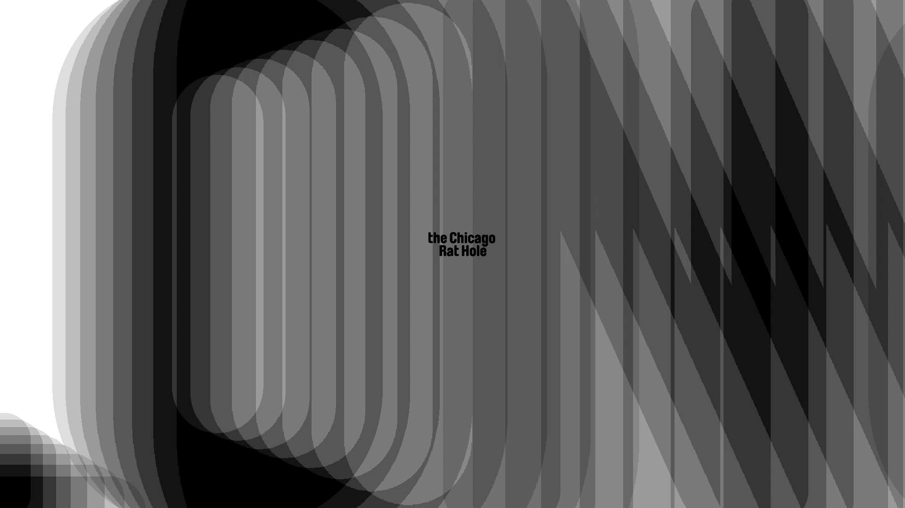
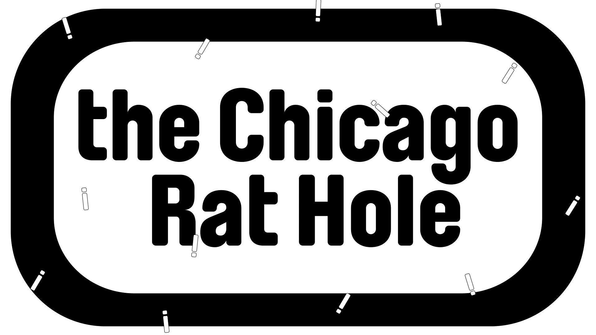
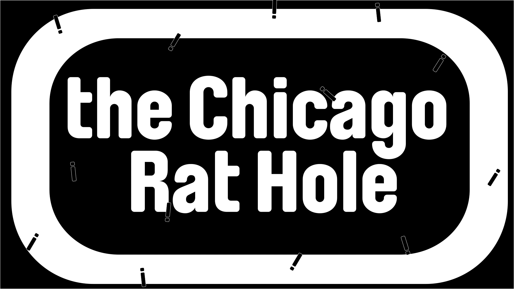
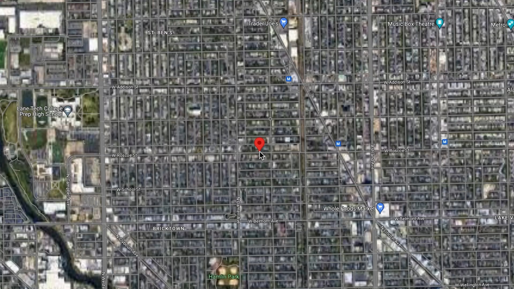
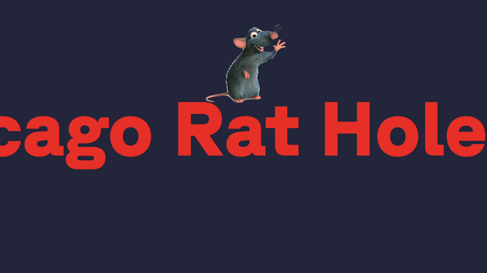
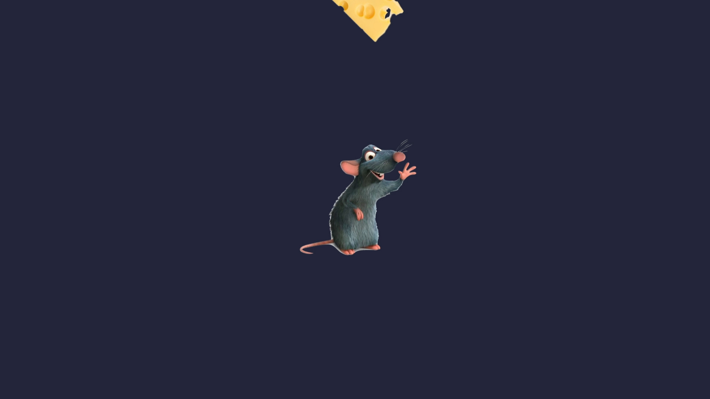
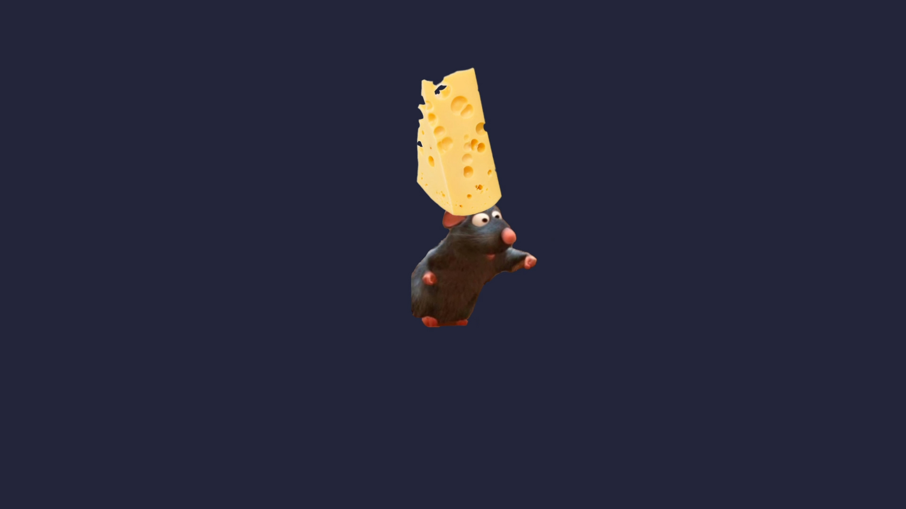

Breaking News: Long Live the Chicago Rat Hole (Feb 2024)
for MOTION GRAPHCS with Shira Inbar (SPRING 2024): PROJECT #1
using Adobe After Effects
In today's media, headlines often encapsulate entire stories. But can a headline evolve into a full narrative? This project investigates how a time-based presentation can transform a simple typographic message, specifically using the article "Long Live the Chicago Rat Hole" from The Atlantic. By animating the headline using Adobe After Effects, I looked at how elements such as size, placement, composition, sound, speed, pauses, repetition, spacing, and color influence the message over time. How does the headline change as it animates? Can it reflect the article's content or convey an opinion through motion? This experiment reveals how dynamic and expressive headlines can become when brought to life through animation.
Typographic (no imagery):



Imagery and type:



